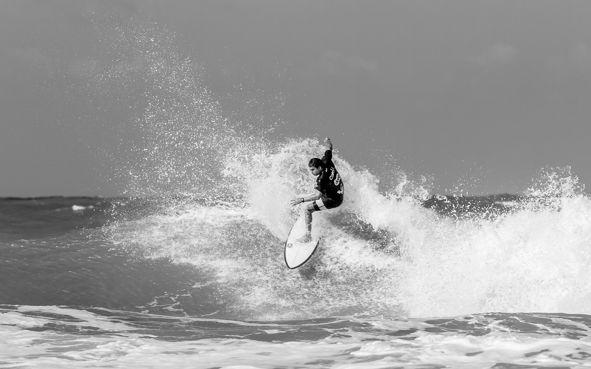
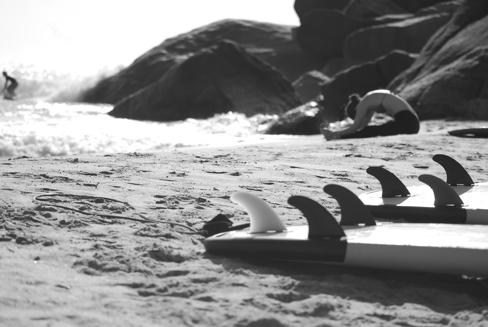
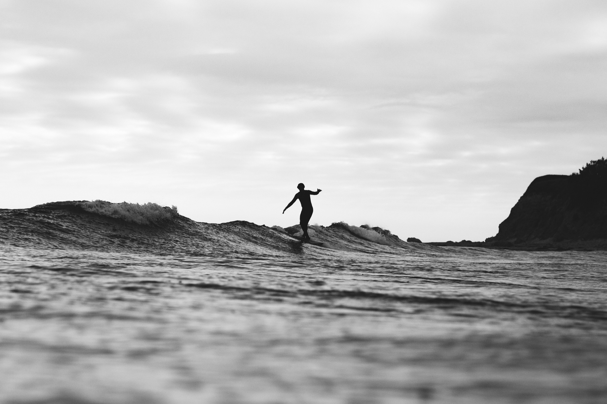

日期：2023/04/10
今天是個絕佳的衝浪日！天空晴朗，風和日麗，波浪也非常適合衝浪。我和幾位衝浪好友一起來到了南灣海灘。當我走進海水中，身體被涼爽的海水包圍，我感覺很舒服。當第一個波浪來襲時，我立刻跳上我的衝浪板。我盡全力掌握平衡，並在波浪上狂飆。當我成功地騎上了一個大浪時，我興奮地尖叫。今天的衝浪經驗真是太棒了！

日期：2023/03/20
今天的海灘非常熱鬧！許多人都在享受海灘的美好時光。然而，我卻發現了一些不同尋常的事情。當我跳上我的衝浪板，我發現水中有一些垃圾和塑料袋。這些污染物不僅對海洋生物有害，也會破壞我們的衝浪體驗。我和其他衝浪者一起清理了海灘上的垃圾，希望可以保持海灘的美好。今天的衝浪體驗提醒我們，我們應該要保護我們的地球，這樣才能繼續享受這美好的運動和自然。

日期：2023/02/16
今天早上起床的時候，發現天氣非常好，於是我立刻決定去衝浪！到了海邊，發現海浪很不錯，但是也很挑戰技巧。我跟幾個朋友一起進入海中，拿起我的Channel Islands Flyer衝浪板，開始了我們的衝浪之旅。雖然起初有些困難，但最後我們都享受了美妙的海浪和陽光，真是一次難忘的經驗。